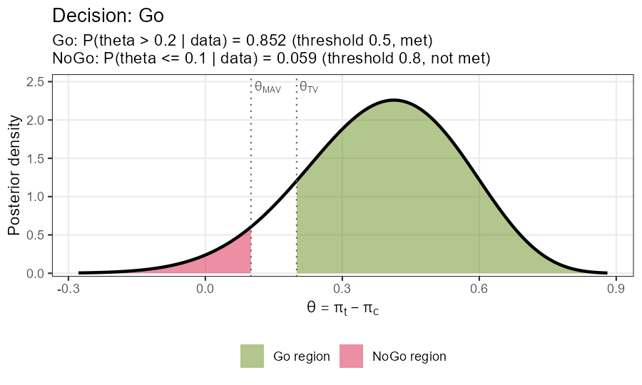
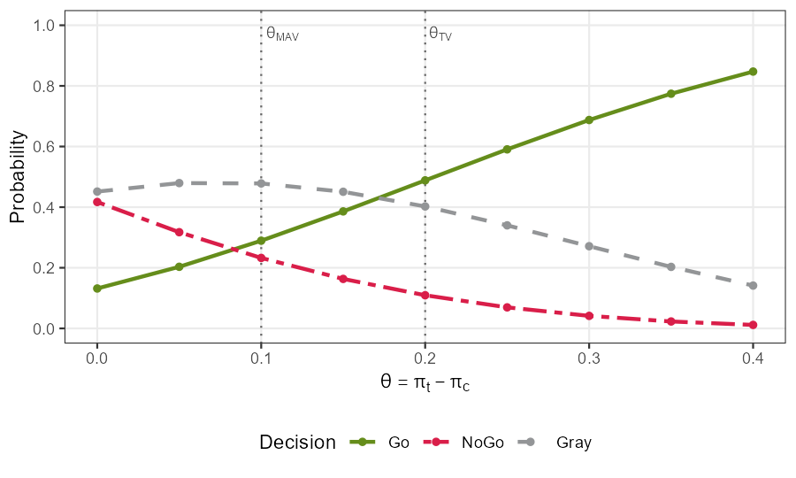
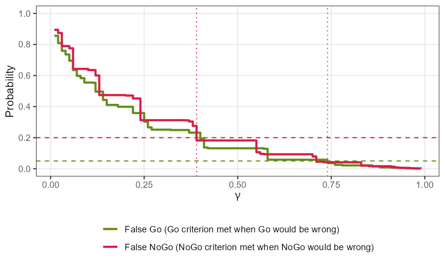
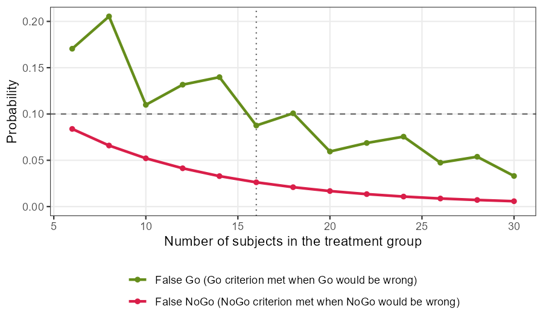
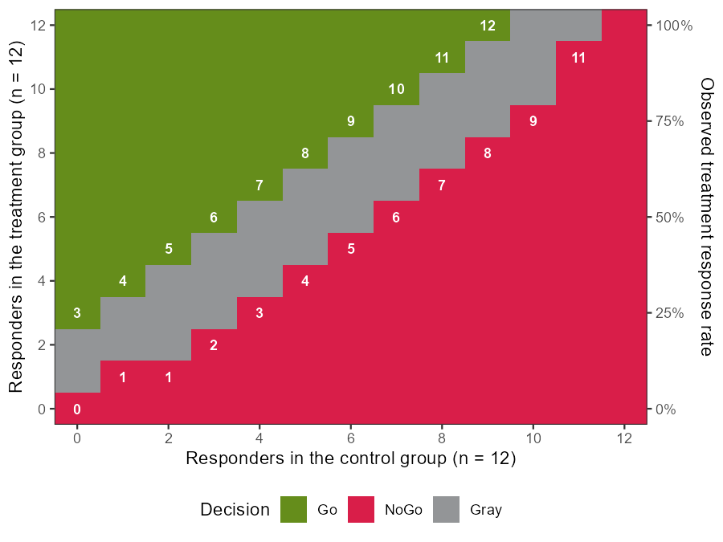

Endpoints at a glance
| Endpoint | qdm_endpoint() | Design | Priors | Data of a group | Columns of the scenarios |
|---|---|---|---|---|---|
| One binary | "binary" | design_binary() | prior_beta(a, b) | data_binary(n, y) | pi_t, pi_c |
| One continuous | "continuous" | design_continuous() | prior_nix(), prior_vague() | data_continuous(n, mean, sd) | mu_t, sd_t, mu_c, sd_c |
| Two binary | "binary2" | design_binary2() | prior_dirichlet(alpha) | data_binary2(counts) | pi_t1, pi_t2, rho_t, and the same with _c |
| Two continuous | "continuous2" | design_continuous2() | prior_niw(), prior_vague() | data_continuous2(n, mean, cov) | mu_t1, mu_t2, sd_t1, sd_t2, rho_t, and the same with _c |
| Time to event | "tte" | design_tte() | prior_gamma(shape, rate) | data_tte(events, exposure) | median_t, median_c |
The columns of the control group (_c) are needed only with a concurrent control group. The cells of two binary endpoints are the responses 00, 01, 10 and 11.
Build a design step by step with the native pipe
qdm_endpoint() | Start a specification for an endpoint |
qdm_sample_size() | n_t, n_c |
qdm_prior() | prior_t, prior_c |
qdm_criterion() | The decision criterion |
qdm_external() | external_t, external_c |
qdm_control() | hypothetical_c, fixed_c |
qdm_tte() | milestone, effect, conduct, conduct_future |
qdm_computation() | method, nMC, enumerate |
qdm_build() | Create the design with its design_*() function |
library(BayesianQDM)
spec <- qdm_endpoint("binary") |>
qdm_sample_size(n_t = 12, n_c = 12) |>
qdm_prior(prior_t = prior_beta(0.5, 0.5),
prior_c = prior_beta(0.5, 0.5)) |>
qdm_criterion(criterion_posterior(theta_tv = 0.2, theta_mav = 0.1,
gamma_go = 0.5, gamma_nogo = 0.8))
des <- qdm_build(spec)
# The same design in one call
des2 <- design_binary(
n_t = 12, n_c = 12,
prior_t = prior_beta(0.5, 0.5), prior_c = prior_beta(0.5, 0.5),
criterion = criterion_posterior(theta_tv = 0.2, theta_mav = 0.1,
gamma_go = 0.5, gamma_nogo = 0.8)
)
identical(des, des2)A step sets all its arguments anew: an argument that is not given returns to its default, also when the step is applied to a design made by design_*(). The analyses accept a specification in place of a design.
# Change one part: the sample sizes
spec |>
qdm_sample_size(n_t = 20, n_c = 20) |>
qdm_build()Decision criteria
Go criterion: \(\Pr(\theta > \theta_{TV} \mid D) \ge \gamma_{go}\)
NoGo criterion: \(\Pr(\theta \le \theta_{MAV} \mid D) \ge \gamma_{nogo}\)
criterion_posterior() | Posterior probability of the effect \(\theta\), with the target value theta_tv, the minimum acceptable value theta_mav and the thresholds gamma_go, gamma_nogo |
criterion_predictive() | Posterior predictive probability of the effect \(\tilde\theta\) that a future study with m_t and m_c subjects would observe, compared with theta_null |
qdm_regions() | Numbering of the regions of two endpoints (9 regions for the posterior criterion, 4 for the predictive one) |
- The effect is the difference of the response rates or means, or for a time-to-event endpoint the difference of the milestone survival probabilities or the hazard ratio.
direction = "less": smaller effects are favorable (for example a hazard ratio), withtheta_tvbelowtheta_mav.- Two endpoints:
theta_tvandtheta_mavhave two values;go_regionsandnogo_regionschoose the regions, andrule = "joint"(default),"and"or"or"combines the endpoints. - A Miss is impossible when \(\gamma_{go} + \gamma_{nogo} > 1\) for one endpoint.
criterion_predictive(theta_null = 0.1, m_t = 50, m_c = 50,
gamma_go = 0.8, gamma_nogo = 0.8)
# Smaller effects are favorable, for example a hazard ratio
criterion_posterior(theta_tv = 0.67, theta_mav = 0.8,
gamma_go = 0.5, gamma_nogo = 0.6, direction = "less")
qdm_regions("posterior")Priors, data and controls
prior_beta(), prior_dirichlet() | Beta prior of a rate; Dirichlet prior of the four cells of two binary endpoints |
prior_nix(), prior_niw() | Normal-Inverse-chi-squared and Normal-Inverse-Wishart priors |
prior_vague() | Vague prior for continuous endpoints |
prior_gamma() | Gamma prior of a hazard rate |
borrow(data, a0) | External data through a power prior with weight a0 from 0 to 1 |
hypothetical() | Hypothetical control: data (binary, time to event) or mean and r (continuous) |
conduct_tte() | Enrollment, dropout and time of the analysis of a time-to-event study |
Control group
- Concurrent:
n_cgreater than 0. - External only:
n_c = 0withexternal_c. - Hypothetical:
n_c = 0withhypothetical_c. - Fixed value:
n_c = 0withfixed_c, for example the response rate of the standard of care.
# External control data borrowed with weight a0 = 0.5
ext <- spec |>
qdm_external(external_c = borrow(data_binary(n = 40, y = 8), a0 = 0.5)) |>
qdm_build()
# No concurrent control: a fixed control value ...
fix <- spec |>
qdm_sample_size(n_t = 20, n_c = 0) |>
qdm_prior(prior_t = prior_beta(0.5, 0.5)) |>
qdm_control(fixed_c = 0.2) |>
qdm_build()
# ... or a hypothetical control
hyp <- spec |>
qdm_sample_size(n_t = 12, n_c = 0) |>
qdm_control(hypothetical_c = hypothetical(data = data_binary(12, 3))) |>
qdm_build()Decide with the observed data
qdm_decide() | Probabilities of the Go and NoGo regions, the criteria met and the decision; seed for Monte Carlo methods |
plot() | Posterior density with the Go and NoGo regions, predictive probabilities with their thresholds, or probabilities of the regions of two endpoints |
dec <- qdm_decide(des, data_t = data_binary(12, 9),
data_c = data_binary(12, 4))
dec
plot(dec)
dec: the shaded areas are the probabilities of the Go and NoGo regions.Scenarios and operating characteristics
qdm_scenarios() | Data frame of scenarios from the values of the columns or from the effects theta; theta = "thresholds" gives no effect, the MAV and the TV |
qdm_oc() | Probabilities of Go, NoGo, Gray and Miss under each scenario: exact for one binary endpoint and, by default, for two binary endpoints; simulated with nsim and seed otherwise |
qdm_compare() | Operating characteristics of several designs under the same scenarios |
scen <- qdm_scenarios(des, theta = seq(0, 0.4, by = 0.05), pi_c = 0.3)
oc <- qdm_oc(des, scen)
oc
plot(oc)
designs <- lapply(c(12, 18, 24), function(k) {
qdm_sample_size(des, n_t = k, n_c = k)
})
names(designs) <- paste(c(12, 18, 24), "per group")
cmp <- qdm_compare(designs, scen)
plot(cmp)Calibrate the thresholds
qdm_calibrate() chooses the smallest \(\gamma_{go}\) and \(\gamma_{nogo}\) of a grid for which the probability of a false Go (the Go criterion is met under scenario_go, where a Go decision would be wrong) and that of a false NoGo (the NoGo criterion is met under scenario_nogo) are at most target_go and target_nogo.
cal <- qdm_calibrate(des,
scenario_go = data.frame(pi_t = 0.3, pi_c = 0.3),
scenario_nogo = data.frame(pi_t = 0.6, pi_c = 0.3),
target_go = 0.05, target_nogo = 0.2)
cal
cal$design # the design with the calibrated thresholds
plot(cal)
Search for the sample size
qdm_find_n() keeps the thresholds fixed and gives the smallest candidate sample size that meets the same two targets. Because the probabilities of a binary endpoint are not monotone in the sample size, n_t_stable is the smallest candidate from which every larger candidate meets the targets. n_c sets the control group sizes of the candidates (by default as many as n_t with a concurrent control group, and 0 without one).
res <- qdm_find_n(des,
scenario_go = data.frame(pi_t = 0.3, pi_c = 0.3),
scenario_nogo = data.frame(pi_t = 0.6, pi_c = 0.3),
target_go = 0.1, target_nogo = 0.1,
n_t = seq(6, 30, by = 2))
res
res$design # the design with the smallest candidate found
plot(res)
Decision boundary
qdm_boundary() gives the observed data that lead to Go, NoGo and Gray decisions, whatever the true parameters: the numbers of treatment responders for each number of control responders (one binary endpoint), the observed treatment mean (continuous) or the number of events (time to event). It is not available for two binary endpoints.
b <- qdm_boundary(des)
b
plot(b)
Reports, R code and tables
show_report() | Draft of the sections of a study protocol (design, model and priors, criteria with formulas, computation, result) as HTML or text, for a design, a specification or a result of qdm_oc(), qdm_calibrate(), qdm_find_n(), qdm_boundary() or qdm_decide() |
show_code() | R code that creates a design: the pipe of the steps or one call of design_*() |
as.data.frame() | One-row data frame of a decision, a calibration or a search for the sample size, to combine with rbind() |
show_code(des) # the pipe of the design steps
show_code(des, style = "design") # one call of design_binary()
as.data.frame(dec)
report <- show_report(cal, open = FALSE) # file name of the HTML reportOther endpoints
# One continuous endpoint, moment-matching approximation
qdm_endpoint("continuous") |>
qdm_sample_size(n_t = 15, n_c = 15) |>
qdm_prior(prior_t = prior_vague(), prior_c = prior_vague()) |>
qdm_criterion(criterion_posterior(theta_tv = 30, theta_mav = 15,
gamma_go = 0.6, gamma_nogo = 0.7)) |>
qdm_computation(method = "MM") |>
qdm_oc(data.frame(mu_t = c(0, 20, 40), sd_t = 25, mu_c = 0, sd_c = 25),
nsim = 2000, seed = 1)
# Time to event, hazard ratio (smaller is favorable)
qdm_endpoint("tte") |>
qdm_sample_size(n_t = 30, n_c = 30) |>
qdm_prior(prior_t = prior_gamma(0.1, 1), prior_c = prior_gamma(0.1, 1)) |>
qdm_criterion(criterion_posterior(theta_tv = 0.67, theta_mav = 0.8,
gamma_go = 0.5, gamma_nogo = 0.6,
direction = "less")) |>
qdm_tte(effect = "hazard_ratio") |>
qdm_decide(data_t = data_tte(events = 12, exposure = 300),
data_c = data_tte(events = 20, exposure = 260))
# Two binary endpoints: cells 00, 01, 10 and 11
prior <- prior_dirichlet(rep(0.25, 4))
des_b2 <- design_binary2(
n_t = 10, n_c = 10, prior_t = prior, prior_c = prior,
criterion = criterion_posterior(theta_tv = c(0.15, 0.15),
theta_mav = c(0.10, 0.10),
gamma_go = 0.6, gamma_nogo = 0.6),
nMC = 2000
)
qdm_decide(des_b2, data_t = data_binary2(c(3, 2, 2, 3)),
data_c = data_binary2(c(6, 2, 1, 1)), seed = 1)Methods of the probabilities: "NI" (numerical integration), "MM" (moment matching, fast for operating characteristics) and "MC" (Monte Carlo) for continuous endpoints; exact enumeration (enumerate = TRUE, default) or simulation for two binary endpoints.
Distribution functions
pbetadiff() | Difference of two Beta variables |
pbetabinomdiff() | Difference of two Beta-binomial proportions |
ptdiff() | Difference of two t variables (method NI, MM or MC) |
psurvdiff() | Difference of two milestone survival probabilities |
phazardratio() | Ratio of two hazards |
cellprob_binary2() | Cell probabilities of two correlated binary endpoints |
rdirichlet() | Random generation from the Dirichlet distribution |
# Posterior probability that pi_t - pi_c > 0.2 for the data of dec
# (Jeffreys priors, 9 of 12 and 4 of 12 responders)
pbetadiff(0.2, a_t = 9.5, b_t = 3.5, a_c = 4.5, b_c = 8.5,
lower.tail = FALSE)Plots
The results of the analyses have plot() methods that return ggplot objects: operating characteristics, comparison, calibration, search for the sample size, boundary and decision. Arguments include col_go, col_nogo, col_gray, base_size and legend_position; for two endpoints, heat maps with overlay and cell_values.
plot(oc, col_go = "darkgreen", col_nogo = "firebrick",
base_size = 13, legend_position = "right") +
ggplot2::labs(title = "Operating characteristics")Typical workflow
- Specify the design with
qdm_endpoint()and the steps, or withdesign_*(). - Make the scenarios of the true parameters with
qdm_scenarios(). - Evaluate the operating characteristics with
qdm_oc(), and compare designs withqdm_compare(). - Control the probabilities of a false Go and a false NoGo: calibrate the thresholds with
qdm_calibrate()or search for the sample size withqdm_find_n(). Confirm a design chosen by simulation with a largernsim. - Check which observed data lead to each decision with
qdm_boundary(). - Write the protocol text with
show_report()and the R code withshow_code(). - After the study, decide with
qdm_decide()and show the decision withplot().
Install and documentation
install.packages("BayesianQDM") # CRAN release
remotes::install_github("gosukehommaEX/BayesianQDM") # development version
vignette("overview", package = "BayesianQDM")- Guides: Overview, Working with the pipe, Planning a study, single binary, single continuous, time to event, two binary and two continuous endpoints, migrating from version 0.1.0.
- Reference of all functions and changelog.
- Source and issues: github.com/gosukehommaEX/BayesianQDM.
This sheet describes version 1.1.0. The design steps, qdm_scenarios(), qdm_compare(), qdm_find_n(), show_report(), show_code() and the plot() of a decision are new in 1.1.0.